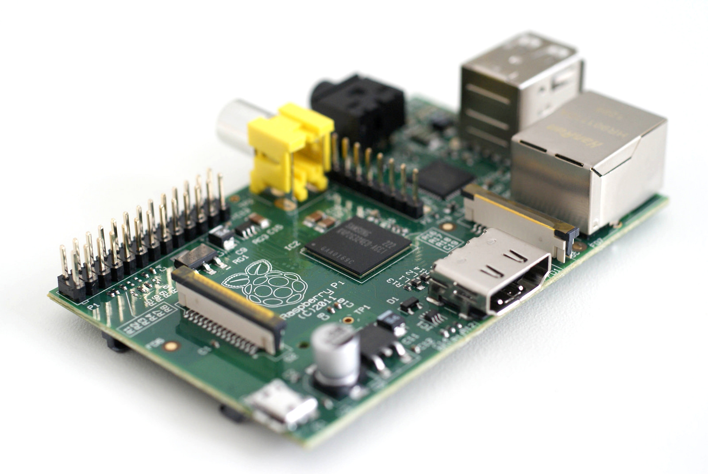

はじめに
世界最初期のコンピュータ --------- 例えばENIAC --------- は，それを使いたい研究者が自分で作った「手作りの実験装置」だった。 使う人はその内部を詳細に知っていたし，知らなければ使えなかった。 現代の僕らの周りのコンピュータ --------- パソコンやスマートフォンなど --------- は当時のコンピュータよりはるかに使いやすく作られている。 コンピュータは，内部の詳細を知らなくても，科学者じゃなくても，誰でも使える機械になった。 内部の仕組みを知らなくても冷蔵庫が使えるように。内部の仕組みを知らなくてもTVを観られるように。 内部の詳細を利用者に隠して，利用するのに必要な部分だけをわかりやすい形にして提供しているわけだ。 それはもちろん進歩であるし良いことなのだけれど，反面，「普通にコンピュータを使っている間は『内部の仕組み』に触れる機会がほとんどない」ということでもある。
この授業「情報学群実験第2」は，「コンピュータの内部の仕組み」を学ぶための授業だ。 1学期の「情報学群実験第1」「アルゴリズムとデータ構造」「計算機言語」では，プログラムの基本要素 --------- if, for, whileと変数と配列と四則演算 --------- を組み合わせて，整列や探索や文字列照合などのアルゴリズムを構築したり，オブジェクト指向の考え方に沿って問題を分析してプログラム化したりする方法を学んだと思うけど，これはつまり，プログラムの基本要素を土台として，その上に物事を構築していく方法を学んだということだ。 それに対してこの授業は，むしろ逆方向で，プログラムの基本要素がどういう仕組みによって実現されているか --------- 例えばコンパイラは何をしているか，オペレーティングシステム (OS) は何をしているか， プログラムを実行するハードウェアはどういう仕組みになっているか --------- といったこと（の初歩の部分）を学ぶ。 つまり，これまで「土台」と考えてきた部分のその中身を見ていこう，というわけだ。
「『内部の仕組み』なんて学ぶ必要あるの?」
--------- ある! だって情報学群は「コンピュータ（に関わる何か）の専門家」になるための場所なのだから。
これは，「将来君たちが『コンパイラを自分で作る』とか『OSを改造する』とか『ハードウェアを設計する』ような仕事に就く」という意味じゃない（そういう人も少しは居ると思うけど）。 実際に「内部の仕組み」をいじらなくてはならない機会はたぶん少ない。 しかし，「その部分は知らなくていい」ということではない。 何かの形でコンピュータに携わる仕事， コンピュータを使って何かを作り出す仕事に就くなら， コンピュータの仕組みも基礎知識として知っておくべきだ。 例えば自動車の販売員が「私は販売員だから自動車の仕組みはわかりません」と言うことは許されるだろうか? 自動車に関わる仕事に就いているのなら， 自動車の内部をいじることが仕事でなくても， 内部の仕組みの基本的な知識は身に付けておくべきではないか? 「腕前」やスキルとして発揮する機会はなくとも， その知識はきっとその人の仕事の質を良くする。 新しいアイディアが必要なとき， 解決策を見つけなければならないとき， 利用者のために説明書を書くとき， 内部の仕組みを知っていることは多いに役立つだろう。
この授業の大きな目標は，これまでコンピュータについて学んだことを， その土台の仕組みがどうなっているか覗きながら学び直すことだ。 でもそれってかなり大変だ。 例えば，TVを観るのは簡単だけど，それがどういう仕組みで実現されているのか， 「裏蓋を開いてすべての部品を取り外して一個一個の役割を調べて学ぶ」ことを想像してみればいい。 「TVで映像番組を観る」ことは日常的で簡単な事柄だと僕らは思っているけれど， その簡単に見える事柄が実は， 今まで意識していなかった，裏蓋の中に隠されていた，大量の部品の複雑な相互作用によって実現されている。 たぶん次から次へと部品が出てきてきりがないように感じられるだろう。 部品の役割を学ぶためにはそもそも電子回路の理論に関する知識が必要だ。 さらには，裏蓋を開いて部品を取り外していくために「正しいねじ回しの使い方」すら学ばなければならないかも知れない。 「隠されている部分を開いて調べて理解する」ことは本当に手間の掛かることだ。 しかも，授業の限られた時間で学べることは「内部の仕組み」のほんの一部に過ぎない。 それでも，ほんの一部でも土台の仕組みを知り，コンピュータの基本構造を知るだけで， 「普通に使っているだけ」よりもずっと深くコンピュータを理解できるようになるはずだ。
 Photo: GijsbertPeijs / CC BY (brightness adjusted)
この授業は主に2つの題材を扱う。 アセンブリ言語 (assembly language) によるプログラミングと， それによる単基板コンピュータ (single-board computer) の制御だ。 アセンブリ言語プログラミングとは一言で言えば， コンパイラを使わず，機械が実行できるプログラムを直接書くってことだ。 でも，上でも言ったように，「アセンブリ言語でプログラムを書く」という「スキル」を身に付けることが目的じゃない。 機械が実行できる命令とはどういうものか， if, for, whileや変数や配列や関数呼び出しとどう対応しているか， 電子回路であるハードウェアとプログラムはどう関係しているか， といった知識を身に付けることが目的だ。 そして，ハードウェアとプログラムの関係をより深く理解するために， 手のひらサイズのコンピュータRaspberry Pi（上の写真）を操るプログラムを作成する。 外部に接続した発光ダイオード (LED) を光らせたりスイッチのオンオフを読み取ったりするプログラムを作ることで， コンピュータという機械の仕組みやプログラムとの関わりを実感しながら学べる， と期待している。
この授業の間中，次々と未知の事柄が現れてきっと右往左往したり途方にくれたりすると思うけど， それらの事柄は皆，パソコンやスマートフォンを「普通に」使えるようにするための「土台」だ。 それを少しずつ解き明かしていくのは楽しいことでもあると思う。 君たちにとって手強い授業だと思うけど，少し覚悟を決めて，でも過度に恐れすぎず，「内部の仕組み」に立ち向かって欲しい。 この授業を終えて「コンピュータという機械を前よりもっと理解できるようになった」と思えるように， 皆が無事そこまで到達できることを願っている。
2016.10.1 ytakata